I'm a third-year Computer Engineering student at Tufts University, concentrating on embedded systems and digital design.
My work has included developing vision pipelines for both competitive and industrial robotics, writing microcontroller firmware for real-time monitoring,
and engineering all-electric automotive systems from the ground up. I enjoy tackling complex problems that require expertise in both
hardware and software, and I aim to create solutions that are reliable, efficient, and practical.
Tufts University | Bachelor of Science in Computer Engineering | Class of 2027
Junior design project developing an autonomous vehicle system using embedded ATMega MCU for color detection and navigation.
In Progress
View details →
Electric Vehicle Safety PCB Design
Tufts Electric Racing - Formula-Hybrid Electric
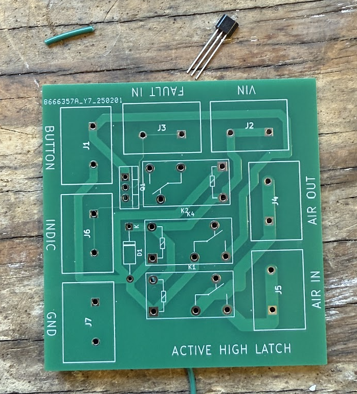
View details →
Skillset
Programming
IntroducedProficientAdvanced
C/C++
Python
ARM Assembly
Digital Design
IntroducedProficientAdvanced
VHDL
Digital Logic Design
FPGA Programming
Embedded
IntroducedProficientAdvanced
RTOS
CMSIS
HAL
PCB DESIGN & ELECTRONICS
IntroducedProficientAdvanced
Altium Designer
KiCad
LTspice
Benchtop Electronics Equipment
Other Engineering Tools
IntroducedProficientAdvanced
Solidworks
Onshape
3D Printing
Education & Awards
Education
Bachelor of Science in Computer Engineering
Expected May 2027
Tufts University - School of Engineering
GPA: 3.55/4.0 · Dean's List
Relevant Coursework: Computer Organization, Digital Logic, Real-Time Embedded Systems, General Embedded Systems,
Data Structures, Circuits and Electronics
High School Diploma
Graduated June 2023
Inter-Lakes High School
GPA: 4.7/4.0
Relevant Activities: Robotics Team Captain, National Honor Society VP,
AP Scholar with Distinction, Future Business Leaders of America, Varsity Soccer.
Awards & Recognition
Dean's List
2023, 2024, 2025
Awarded for maintaining a GPA above 3.2
FIRST Robotics Competition - World Championship Qualifiers
2023
Led team to the World Championship as Team Captain and Lead Engineer
Xerox Award for Innovation and Information Technology
2023
Recognized for outstanding contributions to technology and innovation in robotics
Primary Objective: Develop and deploy a standalone 2D Computer Vision System capable of production-level product inspection and seamless integration with existing manufacturing automation infrastructure.
Day-to-Day Responsibilities
Vision System Design
Program Python-based vision system with OpenCV to serve as a proof of concept before diving into industrial solutions.
Automation Cell Development
Develop necessary robot control sequences, design end-effectors and fixtures, and integrate vision systems into prototype automation cells.
Manufacturing Support
Sustain product manufacturing processes and maintain comprehensive technical documentation for production teams.
Project Development Journey
At Gentex, I developed an automated vision inspection system to enhance existing manual inspection processes.
Collaborating with manufacturing engineers, I identified key inspection points where computer vision could
improve both accuracy and throughput. Designed for eventual integration into production,
the system was engineered to operate robustly in a manufacturing environment with minimal human intervention.
The prototype, built in Python using OpenCV and deployed on a Raspberry Pi 5,
served as a proof of concept for evaluation in a controlled environment. Under the hood, it employed contour detection and template
matching to compare captured images against predefined quality tolerances. The relevant outputs were displayed via a custom GUI which enabled
real-time monitoring, logging of inspection results, and operator control.
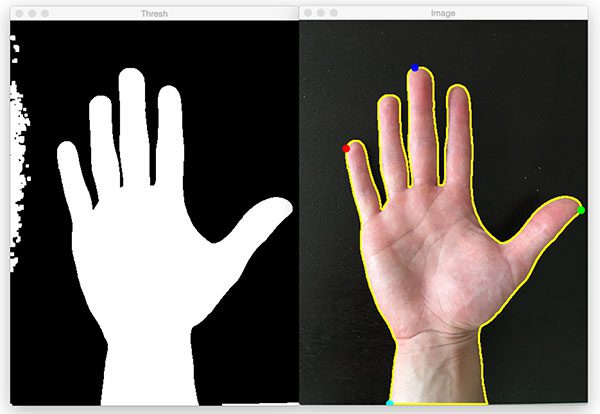
An example of the OpenCV contour creation functionality.
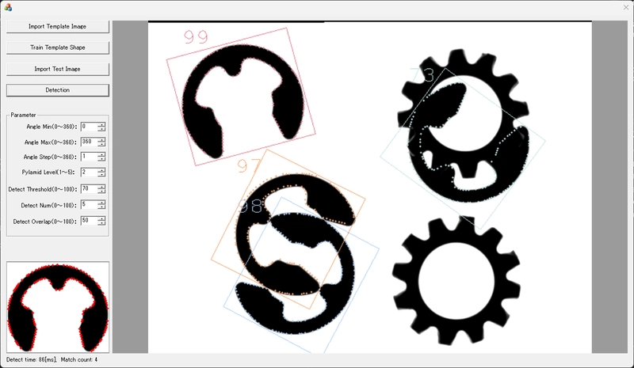
A conceptual example of template matching.
Upon successful validation of the prototype, we planned to transition the system to an industrial-grade platform. This involved selecting hardware and software platform which balanced perforance, ease of integration,
and budget constraints which were ideal for Gentex's manufacturing environment. The vision system was designed to interface with existing PLCs and robotic controllers via Ethernet/IP and industrial I/O modules.
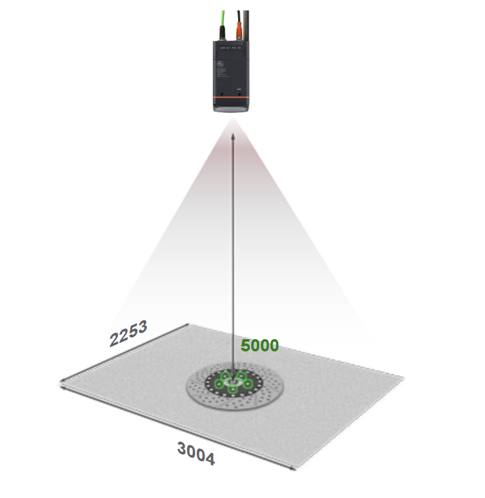
Vision-Based Inspection Example
The chosen solution incorporated advanced image processing techniques such as adaptive thresholding and morphological operations to enhance feature detection accuracy.
Camera calibration routines were implemented to correct for lens distortion and ensure precise measurements.
With a standalone vision inspection system in place, I collaborated with the manufacturing engineering team to design and prototype automation cells.
This involved programming Fanuc robots to handle parts, integrating the vision system for real-time inspection, and designing custom end-effectors to facilitate reliable part manipulation.
The end result was a flexible automation cell prototype capable of performing complex inspection tasks with minimal human intervention, ready for future deployment on the production floor.
Due to project limitations, "plug and play" communication between the vision system and robot controller was not accessible during the internship period. However, to facilitate continuous development,
I created Python firmware for a microcontroller capable of translating Ethernet/IP data into discrete I/O signals compatible with the Fanuc robot controller. This enabled real-time inspection interaction and
object location feedback during cell testing and development.
Image Credits
Contour Example: Image credit: PyImageSearch – “Finding extreme points in contours with OpenCV” (April 11 2016).
Template Matching Example: Image credit: ren482, “Fast Shape-based Template Matching,” DEV Community (Dec 22 2024)
Images used for portfolio demonstration purposes only. Gentex logo used for identification purposes only. Gentex Corporation is not affiliated with this site.
Project Mission: Engineer a competition-grade EV accumulator system that prioritizes safety, performance,
and serviceability while meeting strict FSAE regulatory requirements.
Designing a high-voltage accumulator for the Formula-Hybrid Electric competition presents unique challenges that blend electrical engineering precision with
motorsport durability requirements. As Accumulator Project Manager, I lead the development of a system capable of delivering
consistent power to our electric race car while maintaining the highest safety standards for both competition and testing environments.
Our designs integrate hundreds of lithium-ion cells into modular segments that can be easily serviced and monitored.
Each segment includes custom-designed PCBs for thermistor and voltage sensing, along with a dedicated battery management system (BMS)
that interfaces with the vehicle's safety and shutdown systems. On last year's accumulator (right), I led the design of the low-voltage safety circuitry,
fusebox layout, and high-current path, ensuring reliable isolation, fault detection, and compliance with FSAE electrical regulations.
The image to the right shows the first successful assembly of our accumulator module after months of design, assembly, and testing.
This milestone validated our electrical architecture and safety systems, paving the way for further performance tuning and competition readiness.
The image below right showcases the prototype deployment of a single accumulator module in our car's sidepod. This installation verified mechanical packaging, and
high-voltage connectivity, allowing us to energize the system and perform charge and discharge tests under load conditions.
Building on lessons learned from the previous system, our in-developement accumulator focuses on modularity, improved thermal management,
and enhanced reliability in a a form factor of 50% smaller than before.
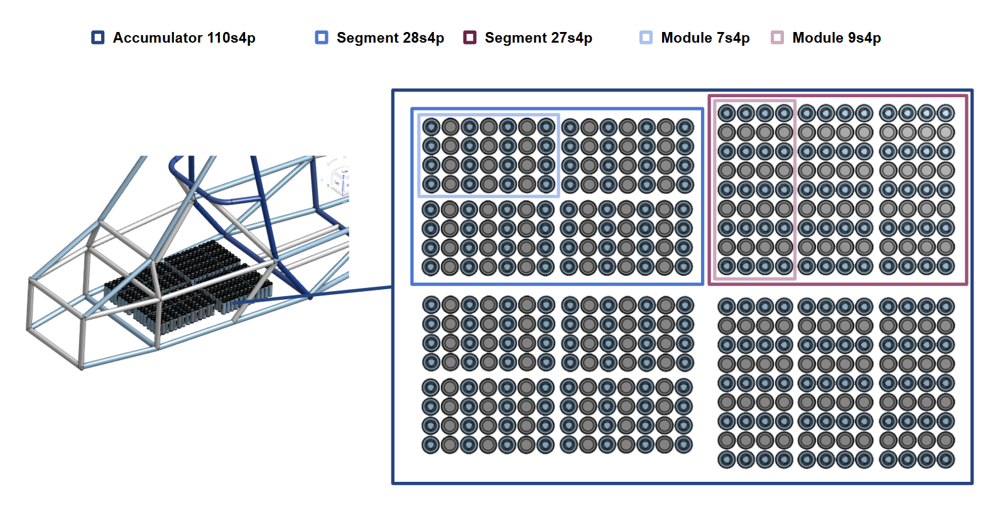
Prototype Accumulator Arrangement
This new design, built from the ground up with Molicel P42A cells is optimized to match the needs of our chosen motor/inverter
during events like acceleration and autocross. The entire accumulator is designed to be removed from the car as a single unit.
I am developing flexible distribution PCBs to accommodate celltap and thermistor connections while minimizing wiring complexity.
Additionally, busbar design is in-progress with a focus on minimizing weight while ensuring low resistance and effective heat dissipation.
Cell Testing & Validation
During the design of our new pack, rigorous cell testing is essential to ensure our Molicel P42A cells can meet performance requirements under the demanding
conditions of Formula-Hybrid competition. Our testing protocol evaluates discharge performance across varying temperature
ranges, load conditions, and cycle counts to validate cell reliability and safety margins, while examining voltage sag and capacity retention.
This data directly informs our accumulator architecture, cooling system design, and BMS configuration to ensure reliable
performance throughout competition events while maintaining compliance with FSAE safety regulations.
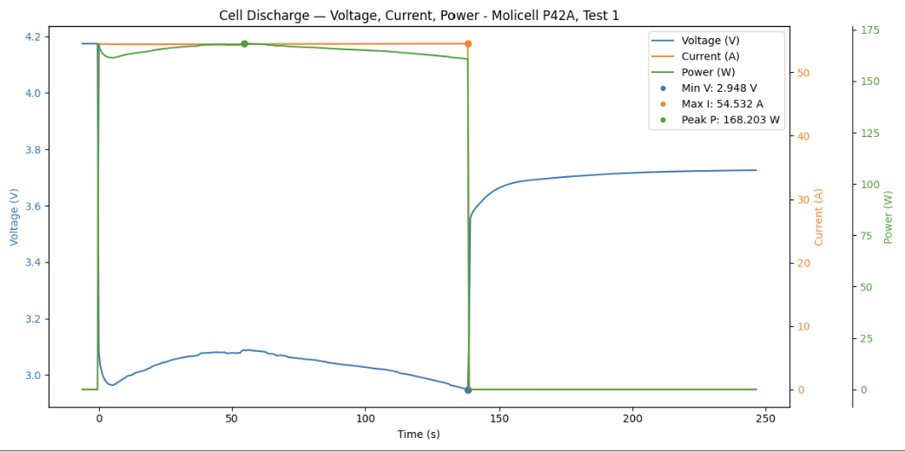
Preliminary Cell Testing Results
Junior Design Project · Tufts University · September 2025-Present
In Progress
Project Mission: As part of my junior design project at Tufts University, I am developing an autonomous vehicle system that can navigate
and follow colored objects using embedded systems and custom sensor arrays. The project challenges small teams to integrate
hardware design, embedded programming, and control systems to create a fully autonomous robotic platform capable of
real-time decision making and wireless coordination with other vehicles.
The system is powered by an embedded ATMega MCU and incorporates custom hardware design, embedded C++ programming,
and wireless communication systems for real-time control and telemetry applications. This junior design project
emphasizes practical engineering skills including PCB design, sensor integration, and embedded software development.
Embedded Detection System
To enable color detection for line following, our team created a purpose-built photodiode array and algorithm to use embedded ADCs
for course marker detection. The system processes analog sensor data in real-time to identify navigation targets and guide
autonomous vehicle movement without relying on external computer vision processing, demonstrating embedded systems design principles.
WebSocket Communication
The project requirements include implementing WebSocket communication to enable real-time telemetry, remote control
capabilities, and interaction with other student vehicles on the course. This wireless interface allows for dynamic control
adjustments and coordination between multiple autonomous systems, simulating real-world multi-robot coordination scenarios.
PCB Design · Tufts Electric Racing · 2024
As part of Tufts Electric Racing's commitment to safety and regulatory compliance, I designed and developed critical safety system PCBs
that ensure safe operation of our high-voltage electric racing vehicle. These systems monitor, control, and protect both the vehicle
and driver during competition and testing scenarios.
Fusebox PCB
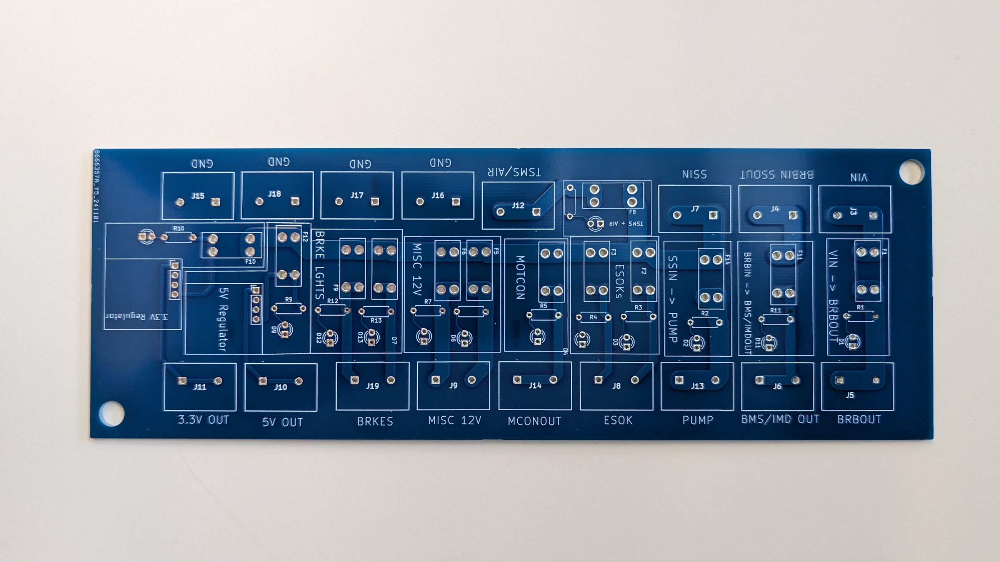
Fusebox PCB design showing circuit layout and component placement for high-voltage protection systems.
The fusebox PCB serves as a critical protection and distribution hub for the vehicle's electrical systems. This board incorporates
multiple fuse circuits, all with visual indicators for blown fuses, and is designed to handle high-current loads while ensuring
safe operation under fault conditions.
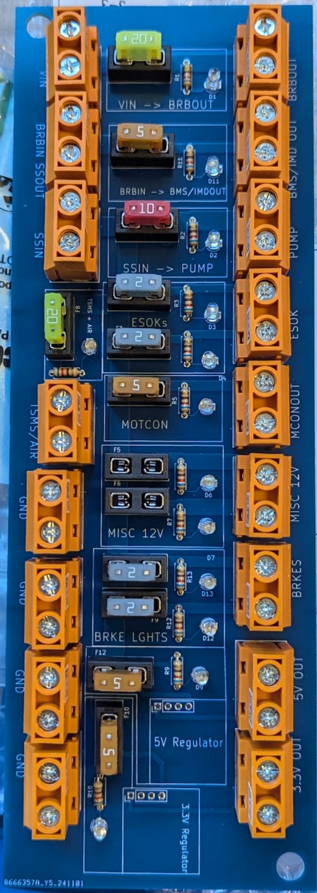
Fully populated fusebox PCB showing mounted components, fuses, and final assembly ready for vehicle integration.
Safety Interlocks PCB
Safety interlocks allowed the safety system to stay energized unless a fault was detected. Active high and active low
latches were designed for deployment with various sensor types, including the motor controller, BMS, and high-voltage connection interlock fault signals.
The circuits were designed to always begin in the disconnected state on power-up, and only energize when all safety conditions were met. Furthermore,
the latches were designed to fail-safe, meaning any loss of power or fault condition would immediately de-energize the system.
Active high latch circuit design showing PNP-based fault signal processing and safety interlock logic.
FIRST Robotics Competition · Team Captain & Lead Engineer · 2022-2023
FIRST Robotics Competition Context
FIRST Robotics Competition challenges high school teams to design, build, and program 120-pound robots within six weeks to compete in alliance-based matches.
Teams must engineer solutions for complex game objectives while adhering to strict size, weight, and safety constraints. The competition demands expertise
across mechanical design, electrical systems, software development, and real-time control.
Our 2023 Charged-Up competition robot.
Autonomous Vision System Development
Challenge
During the 2022 Season, the challenge included collecting and scoring inflated game pieces through an elevated hoop. To compete effectively, which
includes autonomous scoring during the first 15 seconds of each match, and precision manual control thereafter, accurate target acquisition was essential.
To aid in this task, and promote innovation, the field featured retroreflective tape around scoring targets.
2022 Rapid React field showing central scoring target.
Technical Approach
For this engineering challenge, I led the development of a real-time vision system using a Limelight vision processor to detect
retroreflective tape on scoring targets. Using the a COTS Limelight option, we optimized the camera's mounting angle to
maximize target visibility, and programmed it to return the 2D pixel coordinates of detected targets.
With this data, we developed a custom algorithm to use the vertical dimension to estimate the distance to the target, and the
horizontal dimension to calculate the required robot rotation angle. This information was fed into our swerve drive's autonomous control system,
allowing the robot to align itself with the target and adjust launching parameters for efficient scoring.
Results
This system enabled consistent autonomous scoring from up to 10 feet away, significantly improving our match performance.
Previous to the 2022 season, our tank drive system limited maneuverability and prevented simultaneous movement and rotation, reducing game piece collection efficiency.
To address this, I spearheaded the integration of a swerve drive system, enabling omnidirectional movement and enhanced agility on the field.
Technical Approach
Given our team's limited prior experience with swerve drives, we decided to purchase a COTS swerve module system for rapid deployment.
With this, we deployed a FIRST-robotics standard swerve kinematics library and dove into adjusting the control algorithms to suit our robot's dynamics.
More specifically, we implemented field-centric control using a gyroscope for orientation feedback, allowing intuitive driver control. This
enabled each direction on the joystick to always correspond to the field's direction relative to the driver, regardless of the robot's heading.
Furthermore, we fine-tuned the PID control loops for each wheel module to ensure precise speed and angle adjustments, enhancing overall responsiveness.
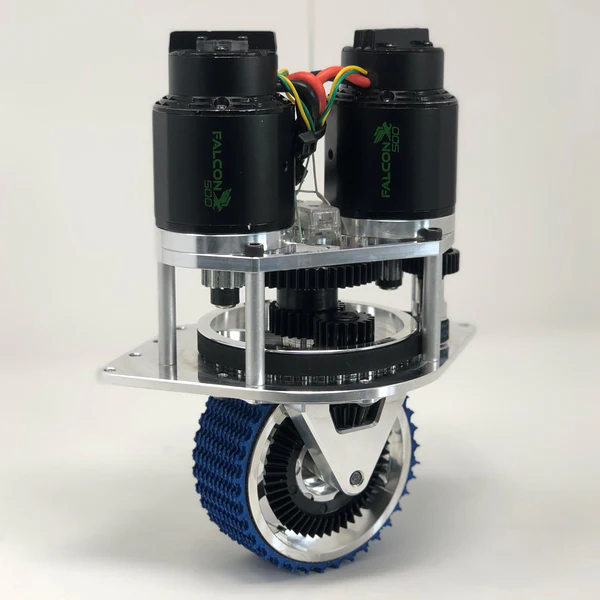
MK4 swerve module showing independent steering and drive motor configuration.
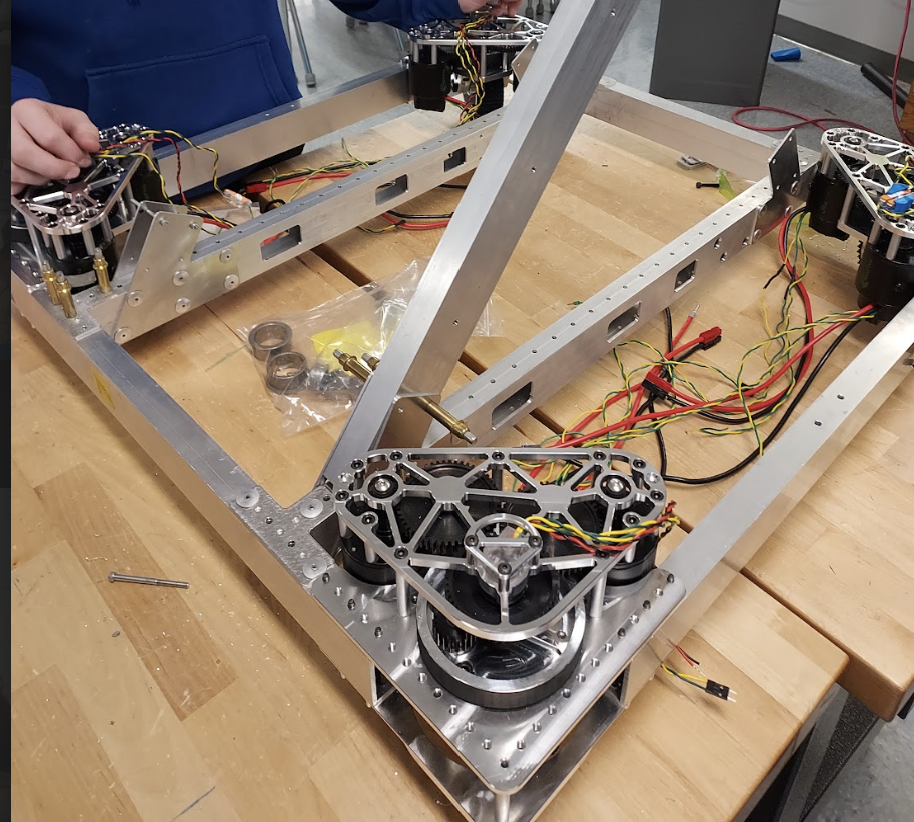
Our team's prototype swerve drive frame during development and testing.
Results
The swerve drive system significantly improved our robot's maneuverability, allowing for complex movement patterns and rapid repositioning during matches.
This upgrade contributed to a massive increase in team performance, culminating in our highest-ever regional placement at the time, and
qualifying for the district championships.
Dynamic Platform Balancing System
Challenge
The endgame of the 2023 challenge required balancing on a dynamic "Charge Station" platform for bonus points, but unpredictable motion caused most robots to fall off.
I needed to develop an IMU-based control system for stable equilibrium while compensating for external disturbances from other robots.
Technical Approach
As described above, a IMU provided orientation feedback for field-centric driving and was already integrated into the robot.
With this, I collaborated on the development of a PID-based balancing algorithm that adjusted wheel speeds in real-time to maintain level orientation.
This enabled the programming of a completely autonomous balancing routine that could be activated during the endgame period.
Once balanced, the 2 of the 4 wheels would rotate 90 degrees to lock the robot in place, preventing the robot from rolling off due to external forces.
Results
Achieved an estimated 95% success rate in autonomous balancing attempts during competition matches.
Consistent performance made our team a valuable alliance partner for endgame strategies.
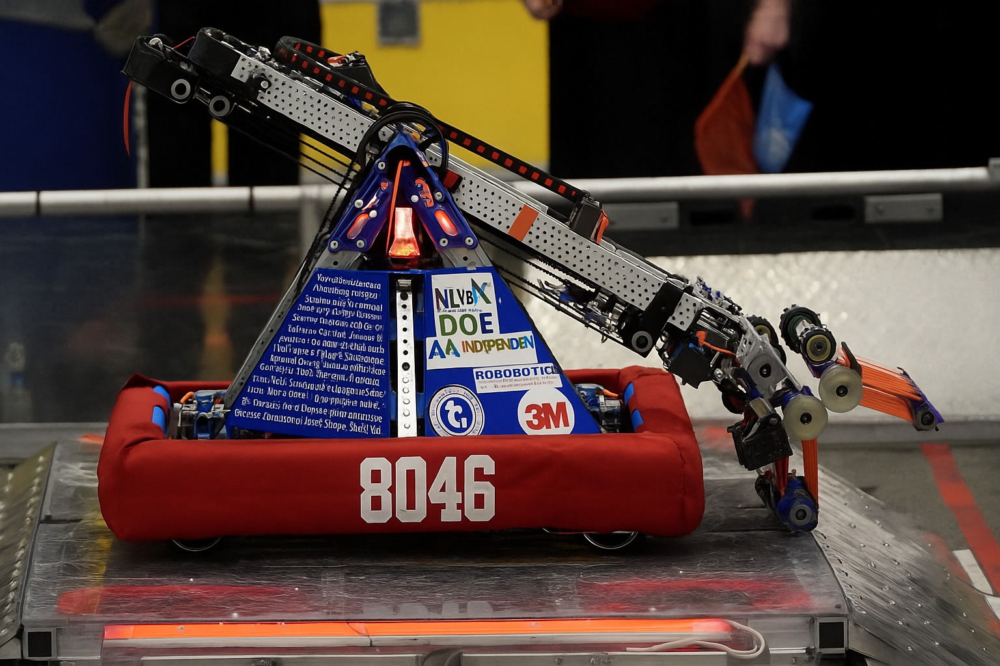
Robot demonstrating autonomous balancing on the Charge Station during the 2023 Charged Up challenge.
Image Credits
Rapid React Field Layout: AutomationDirect. "2022 FIRST Robotics Rapid React 3D Printed Field." AutomationDirect Library, accessed November 6, 2025, https://library.automationdirect.com/2022-first-robotics-rapid-react-3d-printed-field/
Limelight Example Interface: Limelight Vision. "Getting Started with Pipelines." Limelight Documentation, accessed November 6, 2025, https://docs.limelightvision.io/docs/docs-limelight/getting-started/pipelines
Images courtesy of Lakerbots 8046 FRC Team. Field layout, swerve module, and Limelight documentation images used for educational demonstration purposes.
5-Stage Pipelined ARM Processor · Computer Architecture Course · 2025
Project Mission: Engineer a complete 5-stage pipelined processor from scratch, implementing advanced concepts
like hazard detection and data forwarding entirely in VHDL.
As the term project for my Computer Architecture course, I designed and implemented a simplified ARM-like processor using VHDL.
The processor supports a subset of ARM instructions (specifically LEGv8), including arithmetic operations, memory access, and control flow.
The project began with designing foundational components like the PC, instruction and data memory, register file, and ALU.
I first wired it together into a single-cycle architecture to validate basic functionality before transitioning to a pipelined design.
This shift to pipelining introduced challenges around instruction dependencies and timing, which I addressed through hazard detection
and data forwarding mechanisms.
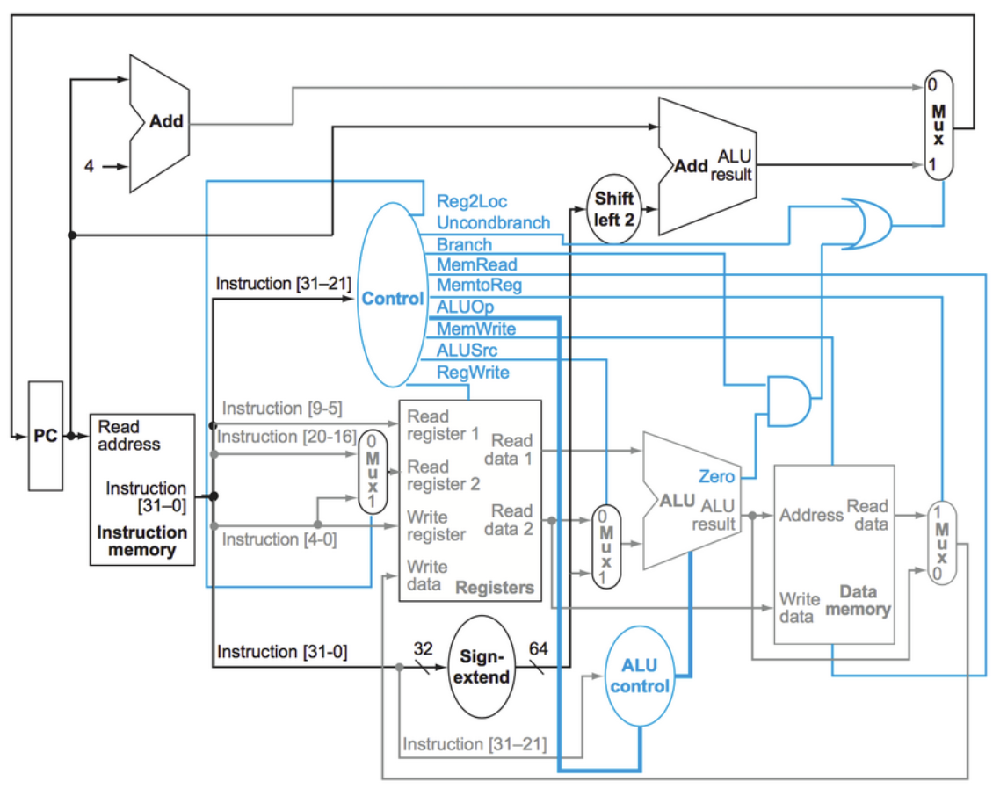
Single-cycle processor architecture.
The pipelining implementation follows the classic five-stage approach: Instruction Fetch, Instruction Decode,
Execute, Memory Access, and Write Back. Each stage operates concurrently with others, creating a processing pipeline that can
theoretically complete one instruction per clock cycle. However, the real complexity emerges when handling data hazards—situations
where instructions depend on results from previous instructions still moving through the pipeline.
Verification involved developing comprehensive testbenches that could automatically validate processor functionality across various
instruction sequences. Using GTKWave for waveform analysis, I could observe signal propagation through each pipeline stage, verify
timing relationships, and debug complex interactions between hazard detection logic and data forwarding mechanisms.
Image Credits
Single-Cycle Architecture Diagram: Patterson, David A., and John L. Hennessy. Computer
Organization and Design - The Hardware/Software Interface (Arm® Edition). ISBN: 978-0-12-801733-3.
Textbook diagram used for educational purposes under fair use. Code screenshots and simulations are personal development work.
Project Mission: Recreate the complete 2048 gaming experience using only VHDL on an FPGA, including graphics rendering, game logic, and user input.
For the final project of my Digital Logic Course, I collaborated with a small group to implement the popular 2048 game entirely in VHDL on an iCE40 FPGA development board.
The game features full VGA output for graphics display and supports user input via a classic NES controller, enabling a seamless gaming experience on custom hardware.
System architecture block diagram showing the interconnected VHDL modules for VGA controller, game logic, and input processing.
At the core of the project was the complex game logic, which required careful state management to handle tile movements, merging, and score updates. Additionally,
I developed a custom graphics pipeline to render the game board and tiles on a VGA display, adhering to strict timing requirements for synchronization signals.
Each tile was stored in its own ROM block, allowing for efficient fetching and rendering during gameplay. The graphics system also required
tightly timed pixel clock generation and synchronization with horizontal and vertical sync signals to ensure a stable display.
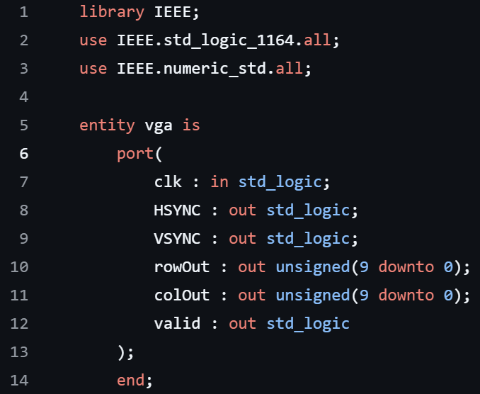
VGA controller entity showing input/output ports for pixel clock generation and synchronization signals.
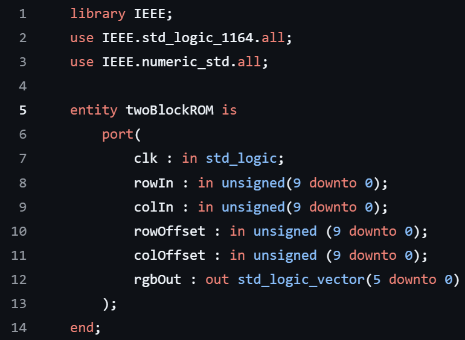
ROM block structure for storing and accessing tile graphics data during game rendering.
Implementation of the game was not small feat, as we had to remain within the constraints of FPGA resources while ensuring smooth gameplay and responsive controls.
The final product successfully recreated the addictive 2048 experience, demonstrating the power of VHDL for complex system design on FPGA platforms.
Software Engineering Resume · Updated November 2025
View my complete resume below or download the PDF for offline viewing.